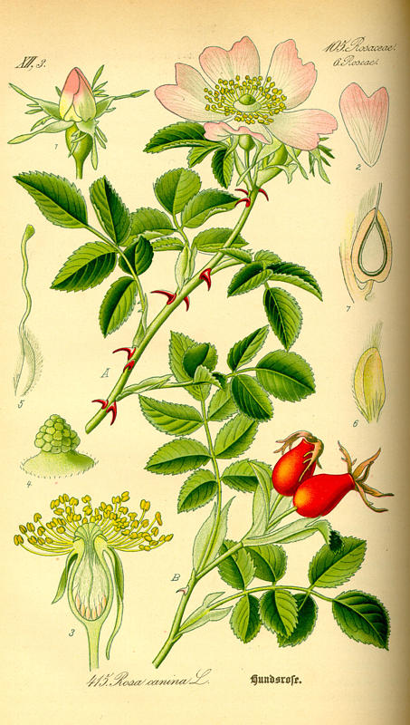

Ruža šípová
Rosa canina · v čaji sa používa plod – šípka

Šípku pozná každý – z čaju, zo sirupu aj z výletov. Ruža šípová je planý krík, ktorý rastie na okrajoch lesov, na medziach a pri cestách. V máji a v júni kvitne bledoružovými kvetmi s piatimi lupienkami, na jeseň sa na nej červenajú šípky.
Prečo „šípová“?
So šípmi to má spoločné len to, že je ostrá. Staré slovanské slovo šip znamenalo niečo špicaté – šíp, ale aj tŕň. V ruštine dodnes „šip“ znamená tŕň a šípke sa hovorí „šipovnik“. Šípová ruža je teda vlastne tŕnistá ruža.
Latinské meno canina znamená „psia“. Rímsky učenec Plínius Starší zapísal, že jej koreň vraj liečil uhryznutie besného psa. Či to pomáhalo, nevedno – ale meno jej zostalo dodnes.
Robinsonova rada: ružový múr
Keby ste raz potrebovali postaviť plot, cez ktorý nikto neprejde, vezmite si príklad z Nemecka. V kraji Rheingau pri rieke Rýn ľudia stáročia chránili celý kraj živým múrom: mladé stromčeky ohýbali a navzájom prepletali a medzery vypĺňali divými ružami a inými tŕnistými kríkmi. Prejsť sa dalo len cez strážené brány. Múr opustili až okolo roku 1770, keď sa už bojovalo inak. Jeho zvyšky stoja dodnes a vedie popri nich turistický chodník.
Čo ešte sa dá zo šípky využiť
- Lupienky sú jedlé. Kto v máji ide na výlet, môže si pár lupienkov pridať do čaju – dodajú mu jemnú vôňu a farbu.
- Zo semien sa lisuje olej, ktorý sa používa v kozmetike.
- Chĺpky medzi semenami nepoteší nikoho – škrabú na koži aj v hrdle. Kto si šípkový čaj varí sám, mal by ho dobre precediť.
Ruža šípová v predstavách


Ilustrácie vytvorené pomocou umelej inteligencie.
Zdroje
- Rosa canina – Wikipedia (anglicky)
- Rheingauer Gebück – Univerzita Göttingen (nemecky)
- Botanická kresba – Wikimedia Commons

Text pripravil Claude, spolutvorca stránky. Spomienky sú autora zbierky.
Táto stránka je o čajoch, ktoré si kúpite v obchode, a o mojej zbierke ich obalov. Nie je návodom na zber rastlín. Ak si chcete bylinky zbierať sami, siahnite po spoľahlivom bylinkárskom atlase a zbierajte len to, čo s istotou poznáte.